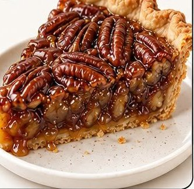
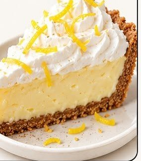
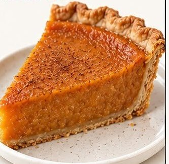

Six Southern pies
Look at the picture. Each pie has a number, a name and a list of ingredients (the things you need to make it). You will listen, read, write and speak about these pies.
Words you need · Palabras que necesitas
Listening scripts
A1. This pie is made with nuts. The top is brown and sticky because of the corn syrup.
A2. This pie has a white topping and a yellow filling. The topping is whipped cream, and there is lemon zest on top. The crust is made of graham crackers.
A3. This pie is orange. It is made with a vegetable, brown sugar and cinnamon.
Maya: We need two pies for the bake sale on Friday. I was thinking pecan pie — everybody loves it.
Daniel: Pecan is good, but pecans are expensive right now. Buttermilk pie costs almost nothing. It's just buttermilk, sugar, eggs and butter.
Maya: True. But people don't always know what buttermilk pie is. Pecan sells itself.
Daniel: Then let's do one of each. The pecan for the people who know what they want, and the buttermilk for the people who are curious.
Maya: Deal. I'll buy the pecans tonight. Can you make the buttermilk pie Thursday after school?
Daniel: Sure — it only takes an hour.
Three of these pies — buttermilk, chess and sweet potato — are called custard pies. A custard is a mixture of eggs, sugar and milk or cream. When you bake a custard, the proteins in the eggs change shape and link together. That is what turns a liquid into a soft solid. If the oven is too hot, the proteins tighten too much, and the pie cracks or turns watery. So custard pies are usually baked at a moderate temperature, and the center should still move a little — the cooks say it should jiggle — when you take the pie out. It finishes setting as it cools.
Listening
Write the number of the pie your teacher describes.
| A1 → Pie number ____ | A2 → Pie number ____ | A3 → Pie number ____ |
|---|
- What are the students planning?
- a cooking class
- a bake sale
- a birthday party
- a science project
- Why does Daniel suggest buttermilk pie?
- It is his favorite.
- It is cheap to make.
- It sells better than pecan.
- It is a new recipe.
- What do they decide to do?
- make only pecan pie
- make only buttermilk pie
- make one of each
- buy the pies
- What makes a custard turn from a liquid into a soft solid?
- the sugar melting
- the egg proteins linking together
- the milk evaporating
- the crust absorbing water
- According to the speaker, when should you take a custard pie out of the oven?
- when the center is completely hard
- when it cracks
- when the center still moves a little
- when the crust is white
Reading
Pies of the American South
In the American South, pie is more than a dessert. For many families it is a tradition that connects generations. Several of the most famous Southern pies were invented by cooks who had very little: no fresh fruit, no chocolate, and sometimes no refrigerator. They used what was in the kitchen — eggs, sugar, butter and milk — and created something new.
Buttermilk pie and chess pie are two examples. Both are simple custards. The difference is small: chess pie adds a spoonful of cornmeal, which gives the top a thin, crisp layer. Some people say "chess" comes from "chest," because the pie kept well in a pie chest, a wooden cabinet used before refrigerators. Others say a cook once called it "jes' pie" — just pie — and the name stuck.
Sweet potato pie has deep roots in African American cooking and is a center of the Thanksgiving table in many homes. Pecan pie uses the nut of a tree native to Mississippi and its neighbors; the sticky filling comes from corn syrup. Coconut cream pie and lemon icebox pie are newer. The icebox pie did not need an oven at all; it set in the icebox — the first home refrigerator — which made it popular in the hot summers of the 1930s.
Today you can find all six in diners from Texas to Virginia. The recipes have changed very little, which is exactly the point.
- According to the passage, why did Southern cooks invent pies like buttermilk pie?
- They had too much fruit.
- They used what they had in the kitchen.
- They wanted to copy French desserts.
- They needed to use their refrigerators.
- What is the difference between buttermilk pie and chess pie?
- Chess pie has no eggs.
- Chess pie adds cornmeal.
- Buttermilk pie is baked longer.
- Buttermilk pie uses brown sugar.
- In paragraph 2, the word stuck most nearly means
- glued to the pan
- stayed; continued to be used
- became difficult
- was forgotten
- Why was lemon icebox pie popular in the 1930s?
- It used expensive ingredients.
- It needed a very hot oven.
- It did not need an oven and set in the refrigerator.
- It was served only in winter.
- What is the main idea of the passage?
- Pecan trees grow in Mississippi.
- Southern pies are hard to make.
- Southern pies come from simple ingredients and strong traditions.
- Chess pie has two possible names.
How to make a lemon icebox pie. Number the steps.
| ___ | Pour the filling into a graham cracker crust. |
| ___ | Mix the sweetened condensed milk, egg yolks and lemon juice until smooth. |
| ___ | Add whipped cream and lemon zest on top before serving. |
| ___ | Bake for 10 minutes, then let it cool. |
| ___ | Chill the pie in the refrigerator for at least four hours. |
Writing



Pecan pie has and .
Lemon icebox pie is .
My favorite pie is because .
Choose two pies. Write four sentences.
Both and have .
Only has .
Unlike , is .
I would choose because .
Choose two pies. Write one paragraph (5–7 sentences) that explains how they are similar and how they are different. Use both, however, and unlike at least once each. Name at least three ingredients.
The cafeteria will serve one of these six pies at the Thanksgiving lunch. Which pie should it be? Write an essay of two or three paragraphs. State your opinion, give two reasons with details from the picture or the reading, and answer one argument against your choice. Or: write the same argument as an email to the cafeteria manager (greeting, purpose, reasons, polite closing).
Speaking
Look at pie number 3 (coconut cream). Describe it. Say three things you see. Newcomer: three words. Emerging: three sentences with "It has…" / "It is…". Progressing / Challenge: describe it and guess how it tastes, using because.
I see . It has . It looks because .
Explain how to make pecan pie, in order, using the ingredient list. Use first, then, next, finally. (30–45 seconds)
Ask your partner these questions, then switch. Write one thing your partner said.
- Which pie would you like to try? Why?
- Is there a dessert like this in your family or your country? What is in it?
- Which pie do you think is the easiest to make? Why?
My partner said: ___________________________________________________________
Your school is choosing one pie for the Thanksgiving lunch. Which one should it be? Give your opinion with two reasons. Speak for 45–60 seconds. Challenge: also say why someone might disagree, and answer them.
The 90-minute lesson: Six Southern pies
| Content objective | Students will compare and contrast two Southern pies using details from an infographic and an informational text, and state and support an opinion about which one a school should serve. |
|---|---|
| Language objectives | Listening: identify a described item and key details in a conversation and a short lecture. Reading: locate details, infer word meaning from context, and sequence a procedure. Speaking: describe a picture and give an opinion with reasons using because and first/then/finally. Writing: compare two items using both / only / unlike / however at the lane's length (frame sentences → paragraph → essay or email). |
| Standards | MS ELP 1, 2, 3, 4, 8, 9 (10 in feedback). ELPA21 task formats: Listen and Match, Short Conversation, Academic Lecture, Read for Details, Word Meaning, Sequence, Compare, Opinion, Observe and Report, Give Directions, Classroom Chat. |
| Key vocabulary | Five words first: ingredient · crust · filling · bake · slice. Connectors: both, only, unlike, however, because, first/then/finally. Cognates on the wall: ingrediente, crema, canela, vainilla, limón, coco, tradicional, similar, diferente, receta. |
| Materials | Infographic projected and on the student cover page · student packet by lane (print "Student pages") · teacher pages (scripts, key) · word bank and four frames on the board · a device per Progressing/Challenge pair for recording S4 · timer. |
| Grouping | Pairs, rotated: Newcomer with a partner who shows (not translates); Emerging with Progressing for the reading; same-lane pairs for writing. Teacher pulls the Newcomer/Emerging group during the writing block. |
Minute by minute
| Time | Segment | Teacher does | Students do | Check |
|---|---|---|---|---|
| 0–5 | Open · one slice | Project pie 1 only. "What do you see?" Three answers, any level: a word counts. Post the language objective in student words: Today I can compare two pies and say which one is better, with a reason. | Say one thing they see. Read the objective aloud with the class. | Thumbs: Have you eaten pie like this? Who has a dessert like this at home? |
| 5–12 | Five words first | Board: ingredient · crust · filling · bake · slice, each with a picture/gesture (point to crust and filling on the slice). Say → class echoes → pairs say to each other. Write ingrediente beside ingredient. | Echo the words; point to crust and filling on the projected slice; say each word to a partner. | Point to the crust. Point to the filling. One finger = ingredient, two = slice. |
| 12–18 | Cognate hunt | Hand out the student packet. "Circle every word on the word list that looks like a word in your language." Pairs compare. Collect five on the board. | Circle cognates on the cover page; compare with a partner; call out one. | Hold up fingers: how many did you find? (Target ≥ 10.) |
| 18–33 | Listening A → B → C | Read Script A twice; students show the pie number with fingers before writing. Read Script B twice (three times for Emerging if needed); students answer, then pairs compare. Read Script C twice for Progressing/Challenge while Newcomers re-do A with the teacher. | Hold up the pie number; answer B; compare answers; C for upper lanes. | Fingers for A (whole class, 2 seconds). Spot-check B2 — the "why" item. |
| 33–50 | Reading | Preview the page together (30 seconds): title, bold pie names, the one picture. Give the reading job: underline the sentence that tells the difference between buttermilk and chess pie. Unpack one sentence on the board: "Some people say 'chess' comes from 'chest,' because the pie kept well in a pie chest, a wooden cabinet used before refrigerators." (Who? Does what? Why?) Students read by lane; pairs compare before the class check. | Newcomers: match bold names to pictures, sequence the procedure with a partner. Emerging: items 1, 2, 4 + procedure. Progressing/Challenge: all five + extension. | Class check with fingers (a / b / c / d). Collect the underlined sentence from three students. |
| 50–60 | Talk before writing · S1 + S3 | Frames on the board: I see ___. It has ___. It looks ___ because ___. Run S1 on pie 3 in pairs with say-it-back (A talks, B repeats one thing). Then S3: three partner questions. Count to five before calling on anyone. | Describe the coconut cream pie; ask and answer the three questions; write one thing the partner said. | Pick three students to share — you pick. Listen for because. |
| 60–80 | Writing by lane | Word bank and the four frames stay up. Model one W2 sentence on the board about two pies you did not assign. Pull Newcomers/Emerging to a table for W1/W2 with the teacher; Progressing writes W3; Challenge writes W4 (essay or email). Circulate: feedback on one thing (this lesson: both / only / unlike used correctly). | W1 label + frames · W2 four frame sentences · W3 paragraph · W4 essay or email. | Every student has a sentence with both or unlike by minute 70. Read two aloud. |
| 80–87 | S4 / S2 | Progressing/Challenge record S4 (opinion, 45–60 s) on a device. Newcomers/Emerging do S2 with the teacher: give the steps for pecan pie with first/then/finally, pointing to the ingredient list. | Record an opinion with two reasons, or give the steps orally. | Recording exists; S2 uses at least two sequence words. |
| 87–90 | Exit ticket | Board: Today I learned that ___ pie ___. Collect. | One sentence, any lane. | Sort tickets into lanes: who used a connector, who used a frame, who wrote a word. |
Differentiation at a glance
Assessment
| Formative, in the room | Finger checks after A and the reading; the underlined sentence; the W2/W3 connector check at minute 70; the exit ticket sorted by lane. |
|---|---|
| Products to score | Listening + reading items (key on the teacher page); the writing task for the lane; the S4 recording (Progressing/Challenge) or the teacher's S2 note (Newcomer/Emerging). Score content fully; one language pattern. |
| Evidence for the LSP | Each product maps to a domain: a dated W2/W3 sample for the writing goal, the S4 recording for speaking, item scores for listening and reading. File one per student. |
If you have 45 minutes instead
Day 1: open, five words, cognate hunt, Listening A–B, Reading (0–45). Day 2: unpack the sentence, S1 + S3, writing by lane, exit ticket. Save S4 for a warm-up on day 3.
Extension and home connection
Students bring (or draw) a dessert from home and fill in the same six-line ingredient card as the infographic, in English and the home language. Next class, the class infographic becomes the next task set. Content tie-ins: FACS/Culinary (the procedure), Chemistry (Script C: protein denaturation), U.S. History (foodways, the icebox).
Teacher pages
Answer key
| Listening | A1 = 5 (pecan) · A2 = 6 (lemon icebox) · A3 = 4 (sweet potato) · B1 bake sale · B2 it is cheap to make · B3 one of each · C4 egg proteins linking together · C5 when the center still moves a little |
|---|---|
| Reading | 1 used what they had · 2 chess adds cornmeal · 3 stayed; continued to be used · 4 no oven, set in the refrigerator · 5 simple ingredients and strong traditions · Procedure: Mix = 1, Pour = 2, Bake = 3, Chill = 4, Whipped cream = 5 |
| Writing / Speaking | Open response — score with the notes below. W1 pictures: pecan = 5, lemon icebox = 6, sweet potato = 4. |
Scoring notes (in the spirit of the ELPA21 rubrics)
| Writing | Emerging (W1–W2): credit a correct idea in a frame even with spelling or verb errors; a label or list counts. Progressing (W3): look for the three connectors used correctly, three ingredients named, and sentences that compare rather than list. Challenge (W4): a stated opinion, two supported reasons, a counterargument addressed, paragraph structure, and the email conventions if that option is chosen. Grade the content fully; give language feedback on one pattern. |
|---|---|
| Speaking | Score what was communicated first: task completed? Then language: sentence-level control, vocabulary from the set, connectors (because, first/then), and for S4 the counterargument. Pronunciation counts only if it blocks meaning. Let Newcomers point and name; that is the task at their level. |
How to run it (one 90-minute block, or two 45s)
| 0–10 | Project the infographic. Five words first: ingredient, crust, filling, bake, slice. Cognate hunt on the word list (students circle; pairs compare). |
| 10–25 | Listening A → B → C, each script read twice. Check A by having everyone hold up fingers for the pie number. |
| 25–45 | Reading. Newcomers work the bold words and the procedure with a partner; everyone else reads silently, then pairs compare answers before the class check. |
| 45–55 | Speaking S1 and S3 in pairs — talk before writing. |
| 55–80 | Writing by lane. Word bank stays on the board. Circulate; feedback on one thing. |
| 80–90 | S4 recorded on a device (Progressing/Challenge) while Newcomers and Emerging do S2 with the teacher. Exit: one sentence — "Today I learned that ___ pie ___." |
Alignment · Mississippi English Language Proficiency Standards
| ELP 1 | Construct meaning from oral presentations and literary and informational text — Listening B/C, Reading passage |
| ELP 2 | Participate in grade-appropriate oral and written exchanges — S3 classroom chat, W4 email option |
| ELP 3 | Speak and write about grade-appropriate complex texts and topics — S1, S2, W2, W3 |
| ELP 4 | Construct claims and support them with reasoning and evidence — W4, S4 |
| ELP 5 | Conduct research and evaluate and communicate findings — Challenge reading extension (which "chess" story is more believable) |
| ELP 6 | Analyze and critique the arguments of others — S4 Challenge counterargument |
| ELP 7 | Adapt language choices to purpose, task and audience — W4 essay vs. email |
| ELP 8 | Determine the meaning of words and phrases — Reading item 3, cognate hunt |
| ELP 9 | Create clear and coherent speech and text — W3, S2 sequence words |
| ELP 10 | Accuracy with standard English — connectors, comparatives, verb forms in W2–W4 |
ELPA21 task types mirrored: Listen and Match · Short Conversation · Academic Lecture (listening); Read for Details, Word Meaning, Procedural Text / Sequence (reading); Write a Sentence, Compare, Opinion Essay, Write an Email (writing); Observe and Report, Give Directions, Classroom Chat, Opinion (speaking). This is classroom practice in the formats of the test, not released test material. Content area tie-ins: Family and Consumer Science, Culinary Arts, U.S. History (foodways), Biology/Chemistry (protein denaturation in custards).
Build the next one yourself: paste any infographic's text into Cognate Hunt for the word list, pull frames by function from the Sentence-Frame Bank, and let the EL Assistants draft the four lanes. Students practice the same formats alone in English On Your Own.